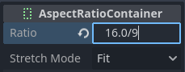

Phát video
Godot hỗ trợ phát video bằng node class_VideoStreamPlayer.
Các định dạng phát được hỗ trợ
Định dạng duy nhất được hỗ trợ trong core là Ogg Theora (đừng nhầm với âm thanh Ogg Vorbis) với các track âm thanh Ogg Vorbis tùy chọn. Các extension có thể bổ sung hỗ trợ cho các định dạng khác.
H.264 và H.265 không thể được hỗ trợ trong core của Godot vì cả hai đều bị ràng buộc bởi bằng sáng chế phần mềm. AV1 miễn phí bản quyền, nhưng vẫn giải mã chậm trên CPU và hỗ trợ giải mã phần cứng chưa có sẵn trên tất cả GPU đang được sử dụng.
WebM từng được hỗ trợ trong core ở Godot 3.x, nhưng đã bị loại bỏ từ 4.0 vì quá nhiều lỗi và khó bảo trì.
Ghi chú
Bạn có thể gặp video có phần mở rộng .ogg hoặc .ogx, đây là các phần mở rộng chung cho dữ liệu nằm trong container Ogg.
Đổi phần mở rộng của các file này thành .ogv có thể giúp video được import vào Godot. Tuy nhiên, không phải file nào có phần mở rộng .ogg hoặc .ogx cũng là video - một số có thể chỉ chứa âm thanh.
Thiết lập VideoStreamPlayer
Tạo node VideoStreamPlayer bằng hộp thoại Create New Node.
Chọn node VideoStreamPlayer trong dock cây scene, vào inspector và tải file
.ogvvào thuộc tính Stream.Nếu video của bạn chưa ở định dạng Ogg Theora, hãy chuyển đến Cài đặt mã hóa Theora khuyến nghị.
Nếu muốn video phát ngay khi scene được tải, hãy đánh dấu Autoplay trong inspector. Nếu không, để Autoplay tắt và gọi
play()trên node VideoStreamPlayer trong script để bắt đầu phát khi cần.
Xử lý thay đổi kích thước và các tỷ lệ khung hình khác nhau
Mặc định, VideoStreamPlayer sẽ tự động thay đổi kích thước để khớp với độ phân giải của video. Bạn có thể làm cho nó tuân theo cách định kích thước class_Control thông thường bằng cách bật Expand trên node VideoStreamPlayer.
Để điều chỉnh cách node VideoStreamPlayer thay đổi kích thước theo kích thước cửa sổ, hãy điều chỉnh các anchor bằng menu Layout ở phía trên viewport của trình chỉnh sửa 2D. Tuy nhiên, thiết lập này có thể không đủ mạnh để xử lý mọi trường hợp, chẳng hạn phát video toàn màn hình mà không làm méo video (thay vào đó để khoảng trống ở các cạnh). Để kiểm soát tốt hơn, bạn có thể dùng node class_AspectRatioContainer, được thiết kế cho đúng trường hợp này:
Thêm một node AspectRatioContainer. Đảm bảo nó không phải là con của bất kỳ node container nào khác. Chọn node AspectRatioContainer, rồi đặt Layout của nó ở phía trên trình chỉnh sửa 2D thành Full Rect. Đặt Ratio trong node AspectRatioContainer khớp với tỷ lệ khung hình của video. Bạn có thể dùng công thức toán học trong inspector để hỗ trợ. Hãy nhớ đặt một trong các toán hạng là số thực (float). Nếu không, kết quả phép chia sẽ luôn là số nguyên.

Biểu thức này sẽ cho kết quả (xấp xỉ) 1.777778
Sau khi cấu hình AspectRatioContainer, hãy đổi cha cho node VideoStreamPlayer để nó trở thành con của node AspectRatioContainer. Đảm bảo Expand được bật trên VideoStreamPlayer. Giờ video của bạn sẽ tự động co giãn để vừa toàn màn hình mà không bị méo.
Xem thêm
Xem Đa độ phân giải để có thêm mẹo hỗ trợ nhiều tỷ lệ khung hình trong dự án của bạn.
Hiển thị video trên bề mặt 3D
Bằng cách dùng node VideoStreamPlayer làm con của node class_SubViewport, bạn có thể hiển thị bất kỳ node 2D nào trên bề mặt 3D. Ví dụ, cách này có thể dùng để hiển thị biển quảng cáo động khi hoạt ảnh frame-by-frame sẽ tốn quá nhiều bộ nhớ.
Bạn có thể làm điều này theo các bước sau:
Tạo một node class_SubViewport. Đặt kích thước của nó khớp với kích thước video tính theo pixel.
Tạo một node VideoStreamPlayer làm node con của node SubViewport và chỉ định đường dẫn video cho nó. Đảm bảo Expand đã bị tắt, và bật Autoplay nếu cần.
Tạo một node MeshInstance3D với resource PlaneMesh hoặc QuadMesh trong thuộc tính Mesh. Thay đổi kích thước mesh cho khớp với tỷ lệ khung hình của video (nếu không, video sẽ bị méo).
Tạo một resource StandardMaterial3D mới trong thuộc tính Material Override ở mục GeometryInstance3D.
Bật Local To Scene trong mục Resource của StandardMaterial3D (ở dưới cùng). Đây là bước bắt buộc trước khi bạn có thể dùng ViewportTexture trong thuộc tính Albedo Texture của nó.
Trong StandardMaterial3D, đặt thuộc tính Albedo > Texture thành New ViewportTexture. Chỉnh sửa resource mới bằng cách nhấp vào nó, rồi chỉ định đường dẫn tới node SubViewport trong thuộc tính Viewport Path.
Bật Albedo Texture Force sRGB trong StandardMaterial3D để tránh màu sắc bị nhợt nhạt.
Nếu billboard cần tự phát sáng, hãy đặt Shading Mode thành Unshaded để cải thiện hiệu năng kết xuất.
Xem Sử dụng Viewport và bản demo GUI in 3D để biết thêm thông tin về cách thiết lập.
Phát lặp video
Để phát video lặp lại, bạn có thể bật thuộc tính Loop. Thuộc tính này sẽ khởi động lại video một cách liền mạch khi video phát đến cuối.
Lưu ý rằng việc đặt cài đặt dự án Video Delay Compensation thành giá trị khác 0 có thể khiến vòng lặp không liền mạch, vì việc đồng bộ âm thanh và video diễn ra ở đầu mỗi vòng lặp, thỉnh thoảng gây mất khung hình. Hãy đặt Video Delay Compensation trong cài đặt dự án thành 0 để tránh hiện tượng rớt khung hình.
Điều kiện giải mã video và độ phân giải khuyến nghị
Việc giải mã video được thực hiện trên CPU, vì GPU không có tăng tốc phần cứng để giải mã video Theora. CPU máy tính để bàn hiện đại có thể giải mã video Ogg Theora ở 1440p @ 60 FPS hoặc cao hơn, nhưng CPU di động cấp thấp nhiều khả năng sẽ gặp khó khăn với video độ phân giải cao.
Để đảm bảo video được giải mã mượt mà trên nhiều loại phần cứng:
Khi phát triển game cho nền tảng máy tính để bàn, bạn nên mã hóa ở tối đa 1080p (tốt nhất là 30 FPS). Phần lớn người dùng vẫn đang dùng màn hình 1080p hoặc độ phân giải thấp hơn, nên việc mã hóa video độ phân giải cao hơn có thể không đáng so với kích thước tệp và yêu cầu CPU tăng thêm.
Khi phát triển game cho nền tảng di động hoặc web, bạn nên mã hóa ở tối đa 720p (tốt nhất là 30 FPS hoặc thấp hơn nữa). Sự khác biệt về hình ảnh giữa video 720p và 1080p trên thiết bị di động thường không quá rõ rệt.
Giới hạn khi phát video
Cách triển khai phát video hiện tại trong Godot có một số giới hạn:
Không hỗ trợ phát video trực tuyến từ URL.
Chỉ hỗ trợ đầu ra âm thanh mono và stereo. Video có 4, 5.1 và 7.1 kênh âm thanh vẫn được hỗ trợ nhưng sẽ được down-mix xuống stereo.
Cài đặt mã hóa Theora khuyến nghị
Lời khuyên là tránh dựa vào các trình xuất Ogg Theora tích hợp sẵn (trong hầu hết trường hợp). Có 2 lý do khiến bạn nên ưu tiên dùng một chương trình bên ngoài để mã hóa video:
Một số chương trình như Blender có thể render ra Ogg Theora. Tuy nhiên, các preset chất lượng mặc định thường rất thấp so với tiêu chuẩn hiện nay. Bạn có thể tăng các tùy chọn chất lượng trong phần mềm đang dùng, nhưng chất lượng đầu ra có thể vẫn chưa thật sự tốt (so với kích thước tệp tăng thêm). Điều này thường có nghĩa là phần mềm chỉ hỗ trợ mã hóa với bitrate cố định (CBR) thay vì bitrate thay đổi (VBR). Nên ưu tiên mã hóa VBR trong hầu hết trường hợp vì nó cho tỷ lệ chất lượng trên kích thước tệp tốt hơn.
Một số chương trình khác hoàn toàn không thể render ra Ogg Theora.
Trong trường hợp này, bạn có thể render video ra một định dạng trung gian chất lượng cao (chẳng hạn video H.264 bitrate cao) rồi mã hóa lại sang Ogg Theora. Lý tưởng nhất, bạn nên dùng định dạng lossless hoặc không nén làm định dạng trung gian để tối đa hóa chất lượng video Ogg Theora đầu ra, nhưng cách này có thể tốn nhiều dung lượng đĩa.
FFmpeg (CLI) là một công cụ mã nguồn mở phổ biến cho mục đích này. FFmpeg khá khó học, nhưng là một công cụ mạnh mẽ.
Dưới đây là các lệnh FFmpeg ví dụ để chuyển đổi video MP4 sang Ogg Theora. Vì FFmpeg hỗ trợ rất nhiều định dạng đầu vào, bạn có thể dùng các lệnh bên dưới với hầu hết mọi định dạng video đầu vào (AVI, MOV, WebM, …).
Ghi chú
Đảm bảo bản FFmpeg của bạn được biên dịch với hỗ trợ libtheora và libvorbis. Bạn có thể kiểm tra bằng cách chạy ffmpeg không kèm đối số nào, rồi xem dòng configuration: trong kết quả của lệnh.
Cảnh báo
Các bản phát hành FFmpeg chính thức hiện tại có một số lỗi trong bộ multiplexer Ogg/Theora. Bạn rất nên dùng một trong các bản build tĩnh hằng ngày mới nhất, hoặc tự build từ nhánh master của họ để có các bản sửa lỗi mới nhất.
Trên Windows, hãy đảm bảo dùng bản build 32-bit của FFmpeg. Các bản build 64-bit trên Windows có lỗi đã biết khi mã hóa Theora, gây ra các lỗi hình ảnh (artifact) trong tệp đầu ra.
Cân bằng giữa chất lượng và kích thước tệp
Mức chất lượng video (-q:v) phải nằm trong khoảng 1 đến 10. Chất lượng 6 là mức cân bằng tốt giữa chất lượng và kích thước tệp. Nếu mã hóa ở độ phân giải cao (như 1440p hoặc 4K), có lẽ bạn sẽ muốn giảm -q:v xuống 5 để giữ kích thước tệp hợp lý. Vì mật độ điểm ảnh của video 1440p hoặc 4K cao hơn, các preset chất lượng thấp hơn ở độ phân giải cao sẽ trông bằng hoặc đẹp hơn so với video độ phân giải thấp.
Mức chất lượng âm thanh (-q:a) phải nằm trong khoảng -1 đến 10. Chất lượng 6 mang lại sự cân bằng tốt giữa chất lượng và kích thước tệp. Khác với chất lượng video, việc tăng chất lượng âm thanh không làm tăng kích thước tệp đầu ra nhiều bằng. Vì vậy, nếu muốn âm thanh sạch nhất có thể, bạn có thể tăng giá trị này lên 9 để có âm thanh lossless về mặt cảm nhận. Điều này đặc biệt có giá trị nếu tệp đầu vào đã dùng nén âm thanh lossy. Âm thanh chất lượng cao hơn sẽ làm tăng mức sử dụng CPU của bộ giải mã, nên có thể gây ngắt tiếng khi hệ thống chịu tải cao. Xem trang này để có bảng liệt kê các preset chất lượng âm thanh Ogg Vorbis và bitrate thay đổi tương ứng.
Kích thước GOP (Group of Pictures) (-g:v) là khoảng cách tối đa giữa các keyframe. Tăng giá trị này có thể cải thiện khả năng nén mà hầu như không ảnh hưởng đến chất lượng. Kích thước mặc định (12) là quá thấp với hầu hết các loại nội dung, vì vậy bạn nên dùng giá trị GOP cao hơn trước khi giảm chất lượng video. Tuy nhiên, lợi ích nén sẽ giảm dần khi kích thước GOP tăng lên. Các giá trị trong khoảng 64 đến 512 thường cho khả năng nén tốt nhất.
Ghi chú
Kích thước GOP lớn hơn sẽ làm tăng thời gian tua (seek) tối đa, với mức tăng đột ngột khi vượt qua các lũy thừa của hai bắt đầu từ 64. Thời gian tua tối đa với kích thước GOP 65 có thể dài gần gấp đôi so với kích thước GOP 64, tùy thuộc vào tốc độ giải mã.
FFmpeg: Chuyển đổi và giữ nguyên độ phân giải video gốc
Lệnh sau chuyển đổi video và giữ nguyên độ phân giải gốc. Bitrate của video và âm thanh sẽ thay đổi để tối đa hóa chất lượng, đồng thời tiết kiệm dung lượng ở những phần của video/âm thanh không cần bitrate cao (chẳng hạn các cảnh tĩnh).
ffmpeg -i input.mp4 -q:v 6 -q:a 6 -g:v 64 output.ogv
FFmpeg: Thay đổi kích thước video rồi chuyển đổi
Lệnh sau thay đổi kích thước video thành cao 720 pixel (720p), đồng thời giữ nguyên tỷ lệ khung hình hiện có. Cách này giúp giảm đáng kể kích thước tệp nếu nguồn được quay ở độ phân giải cao hơn 720p:
ffmpeg -i input.mp4 -vf "scale=-1:720" -q:v 6 -q:a 6 -g:v 64 output.ogv
Video Chroma Key
Chroma key, thường được biết đến với tên hiệu ứng "phông xanh lá" hoặc "phông xanh dương", cho phép bạn loại bỏ một màu cụ thể khỏi ảnh hoặc video và thay thế bằng một nền khác. Hiệu ứng này được dùng rộng rãi trong sản xuất video để ghép các thành phần khác nhau lại với nhau một cách liền mạch.

Chúng ta sẽ tạo hiệu ứng chroma key bằng cách viết một shader tùy chỉnh trong GDScript và dùng node VideoStreamPlayer để hiển thị nội dung video.
Thiết lập scene
Đảm bảo scene có một node VideoStreamPlayer để phát video và một node Control để chứa các thành phần UI dùng điều khiển hiệu ứng chroma key.

Viết shader tùy chỉnh
Để triển khai hiệu ứng chroma key, hãy làm theo các bước sau:
Chọn node VideoStreamPlayer trong scene và đi tới các thuộc tính của nó. Trong CanvasItem > Material, tạo một shader mới có tên "ChromaKeyShader.gdshader."
Trong tệp "ChromaKeyShader.gdshader", viết mã shader tùy chỉnh như bên dưới:
shader_type canvas_item;
// Uniform variables for chroma key effect
uniform vec3 chroma_key_color : source_color = vec3(0.0, 1.0, 0.0);
uniform float pickup_range : hint_range(0.0, 1.0) = 0.1;
uniform float fade_amount : hint_range(0.0, 1.0) = 0.1;
void fragment() {
// Get the color from the texture at the given UV coordinates
vec4 color = texture(TEXTURE, UV);
// Calculate the distance between the current color and the chroma key color
float distance = length(color.rgb - chroma_key_color);
// If the distance is within the pickup range, discard the pixel
// the lesser the distance more likely the colors are
if (distance <= pickup_range) {
discard;
}
// Calculate the fade factor based on the pickup range and fade amount
float fade_factor = smoothstep(pickup_range, pickup_range + fade_amount, distance);
// Set the output color with the original RGB values and the calculated fade factor
COLOR = vec4(color.rgb, fade_factor);
}
Shader dùng phép tính khoảng cách để xác định các pixel gần với màu chroma key và loại bỏ chúng, qua đó xóa màu đã chọn. Các pixel cách xa màu chroma key hơn một chút sẽ được làm mờ dần dựa trên fade_factor, hòa trộn mượt mà với các màu xung quanh. Quá trình này tạo ra hiệu ứng chroma key mong muốn, khiến nền trông như đã được thay bằng một ảnh hoặc video khác.
Đoạn mã trên là một minh họa đơn giản cho shader Chroma Key, và người dùng có thể tùy chỉnh theo nhu cầu cụ thể của mình.
Điều khiển UI
Để người dùng có thể điều chỉnh hiệu ứng chroma key theo thời gian thực, chúng ta đã tạo các thanh trượt trong node Control. Script của node Control chứa các hàm sau:
extends Control
func _on_color_picker_button_color_changed(color):
# Update the "chroma_key_color" shader parameter of the VideoStreamPlayer's material.
$VideoStreamPlayer.material.set("shader_parameter/chroma_key_color", color)
func _on_h_slider_value_changed(value):
# Update the "pickup_range" shader parameter of the VideoStreamPlayer's material.
$VideoStreamPlayer.material.set("shader_parameter/pickup_range", value)
func _on_h_slider_2_value_changed(value):
# Update the "fade_amount" shader parameter of the VideoStreamPlayer's material.
$VideoStreamPlayer.material.set("shader_parameter/fade_amount", value)
func _on_video_stream_player_finished():
# Restart the video playback when it's finished.
$VideoStreamPlayer.play()
using Godot;
public partial class MyControl : Control
{
private VideoStreamPlayer _videoStreamPlayer;
public override void _Ready()
{
_videoStreamPlayer = GetNode<VideoStreamPlayer>("VideoStreamPlayer");
}
private void OnColorPickerButtonColorChanged(Color color)
{
// Update the "chroma_key_color" shader parameter of the VideoStreamPlayer's material.
_videoStreamPlayer.Material.Set("shader_parameter/chroma_key_color", color);
}
private void OnHSliderValueChanged(double value)
{
// Update the "pickup_range" shader parameter of the VideoStreamPlayer's material.
_videoStreamPlayer.Material.Set("shader_parameter/pickup_range", value);
}
private void OnHSlider2ValueChanged(double value)
{
// Update the "fade_amount" shader parameter of the VideoStreamPlayer's material.
_videoStreamPlayer.Material.Set("shader_parameter/fade_amount", value);
}
private void OnVideoStreamPlayerFinished()
{
// Restart the video playback when it's finished.
_videoStreamPlayer.Play();
}
}
đồng thời đảm bảo phạm vi của các thanh trượt là phù hợp, cài đặt của chúng tôi là :

Xử lý signal
Kết nối signal phù hợp từ các thành phần UI tới script của node Control. bạn đã tạo trong script của node Control để điều khiển hiệu ứng chroma key. Các hàm xử lý signal này sẽ cập nhật các biến uniform của shader để phản hồi đầu vào của người dùng.
Lưu và chạy scene để xem hiệu ứng chroma key hoạt động! Với các điều khiển UI đã cung cấp, giờ đây bạn có thể điều chỉnh màu chroma key, phạm vi chọn màu và mức độ làm mờ theo thời gian thực, đạt được chức năng chroma key mong muốn cho nội dung video của mình.